首页 > 编程笔记
Python Scrapy中文教程，Scrapy框架快速入门！
谈起爬虫必然要提起 Scrapy 框架，因为它能够帮助提升爬虫的效率，从而更好地实现爬虫。
Scrapy 是一个为了抓取网页数据、提取结构性数据而编写的应用框架，该框架是封装的，包含 request （异步调度和处理）、下载器（多线程的 Downloader）、解析器（selector）和 twisted（异步处理）等。对于网站的内容爬取，其速度非常快捷。
也许读者会感到迷惑，有这么好的爬虫框架，为什么前面的章节还要学习使用 requests 库请求网页数据。其实，requests 是一个功能十分强大的库，它能够满足大部分网页数据获取的需求。其工作原理是向服务器发送数据请求，至于数据的下载和解析，都需要自己处理，因而灵活性高；而由于 Scrapy 框架的封装，使得其灵活性降低。
至于使用哪种爬虫方式，完全取决于个人的实际需求。在没有明确需求之前，笔者依然推荐初学者先选择 requests 库请求网页数据，而在业务实战中产生实际需求时，再考虑 Scrapy 框架。
第一步，选择 Anaconda 3 作为编译环境。在 PyCharm 中单击左上角 File 选项，单击“Settings”按钮，弹出如图 1 所示界面，然后展开 Project Interpreter 的下拉菜单，选择 Anaconda 3 的下拉菜单：
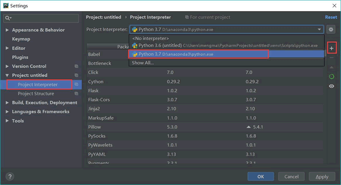
图 1
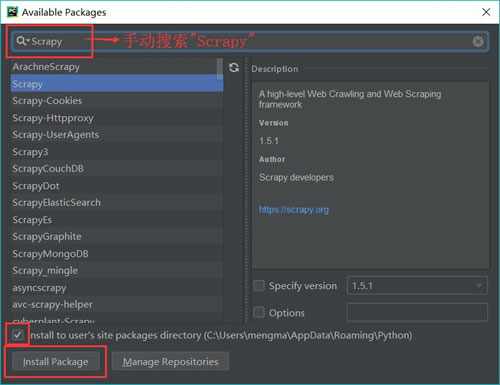
图 2
运行上述代码的目的是创建相应的项目文件，如下所示：
项目结构如图 3 所示：

图 3 项目结构
创建 scrapy 项目以后，在 settings 文件中有这样的一条默认开启的语句。
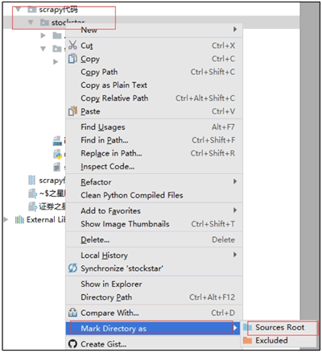
图 4
首先需要对所要抓取的网页数据进行分析，定义所爬取记录的数据结构。在相应的 items.py 中建立相应的字段，详细代码如下：
首先在 CMD 中输入代码，并生成 spider 代码，如下所示：
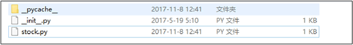
图 5
代码详情如图 6 所示：

图 6
随后在 spiders/stock.py 文件下，定义爬虫逻辑，详细代码如下：
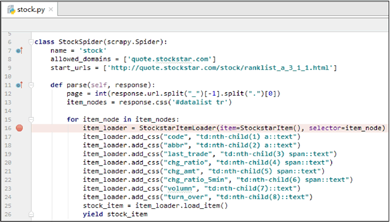
图 7
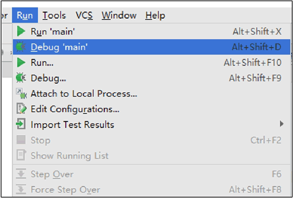
图 8
最后在 PyCharm 中运行 Run＇main＇，运行界面如图 9 所示：
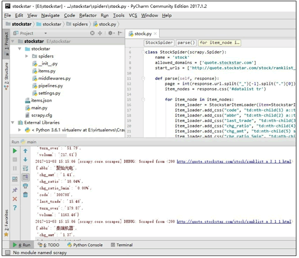
图 9
将所抓取的数据以 JSON 格式保存在 item 容器中。
但本篇 Scarpy 实战毕竟篇幅有限，如果你想深入了解 Scrapy 框架，我推荐你阅读：
Scrapy 是一个为了抓取网页数据、提取结构性数据而编写的应用框架，该框架是封装的，包含 request （异步调度和处理）、下载器（多线程的 Downloader）、解析器（selector）和 twisted（异步处理）等。对于网站的内容爬取，其速度非常快捷。
也许读者会感到迷惑，有这么好的爬虫框架，为什么前面的章节还要学习使用 requests 库请求网页数据。其实，requests 是一个功能十分强大的库，它能够满足大部分网页数据获取的需求。其工作原理是向服务器发送数据请求，至于数据的下载和解析，都需要自己处理，因而灵活性高；而由于 Scrapy 框架的封装，使得其灵活性降低。
至于使用哪种爬虫方式，完全取决于个人的实际需求。在没有明确需求之前，笔者依然推荐初学者先选择 requests 库请求网页数据，而在业务实战中产生实际需求时，再考虑 Scrapy 框架。
Scrapy 安装
直接使用 pip 安装 Scrapy 会产生一些错误的安装提示信息，导致 Scrapy 无法正常安装。当然，既然有问题出现，必然对应着许多的解决办法。在 http://www.lfd.uci.edu/～gohlke/pythonlibs 网站中，拥有很多适用于 Windows 的、已经编译好的 Python 第三方库，读者只需根据错误的安装提示信息找到相应的包，进行安装即可，此处不对这种方法进行详细讲解。本小节主要介绍如何在 PyCharm 中安装 Scrapy。第一步，选择 Anaconda 3 作为编译环境。在 PyCharm 中单击左上角 File 选项，单击“Settings”按钮，弹出如图 1 所示界面，然后展开 Project Interpreter 的下拉菜单，选择 Anaconda 3 的下拉菜单：
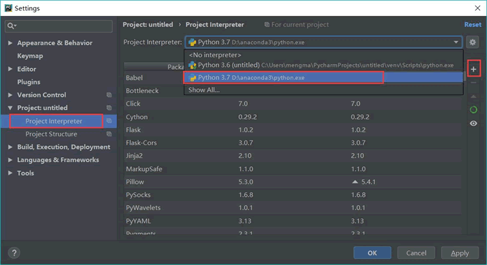
图 1
这里需要提前安装 Anaconda，安装之后才能添加 Anaconda 编译环境。
第二步，安装 Scrapy。单击图 1 界面右上角绿色加号按钮，弹出如图 2 所示的界面。输入并搜索“scrapy”，然后单击“Install Package”按钮。等待，直至出现“Pakage‘scrapy’ installed successfully”：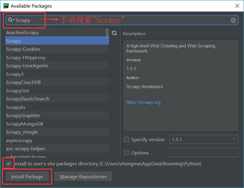
图 2
案例：用 Scrapy 抓取股票行情
本案例将使用 Scrapy 框架，抓取某证券网站A股行情。爬取过程分为以下五步：- 第一步，创建Scrapy爬虫项目；
- 第二步，定义一个item容器；
- 第三步，定义settings文件进行基本爬虫设置；
- 第四步，编写爬虫逻辑；
- 第五步，代码调试。
创建Scrapy爬虫项目
调出 CMD，输入如下代码并按【Enter】键，创建 Scrapy 爬虫项目：scrapy startproject stockstar
其中 scrapy startproject 是固定命令，stockstar 是笔者设置的工程名字。运行上述代码的目的是创建相应的项目文件，如下所示：
- 放置 spider 代码的目录文件 spiders（用于编写爬虫）。
- 项目中的 item 文件 items.py（用于保存所抓取的数据的容器，其存储方式类似于 Python 的字典）。
- 项目的中间件
- middlewares.py（提供一种简便的机制，通过允许插入自定义代码来拓展 Scrapy 的功能）。
- 项目的 pipelines 文件 pipelines.py（核心处理器）。
- 项目的设置文件 settings.py。
- 项目的配置文件 scrapy.cfg。
项目结构如图 3 所示：
图 3 项目结构
创建 scrapy 项目以后，在 settings 文件中有这样的一条默认开启的语句。
POBOTSOXT_OBEY = True
robots.txt 是遵循 Robot 协议的一个文件，在 Scrapy 启动后，首先会访问网站的 robots.txt 文件，然后决定该网站的爬取范围。有时我们需要将此配置项设置为 False。在 settings.py 文件中，修改文件属性的方法如下。ROBOTSTXT_OBEY=False
右击 E:\stockstar\stockstar 文件夹，在弹出的快捷菜单中选择“Mark Directory as”命令→选择“Sources Root”命令，这样可以使得导入包的语法更加简洁，如图 4 所示。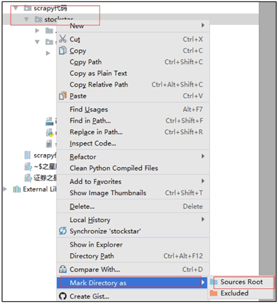
图 4
定义一个item容器
item 是存储爬取数据的容器，其使用方法和 Python 字典类似。它提供了额外的保护机制以避免拼写错误导致的未定义字段错误。首先需要对所要抓取的网页数据进行分析，定义所爬取记录的数据结构。在相应的 items.py 中建立相应的字段，详细代码如下：
import scrapy from scrapy.loader import ItemLoader from scrapy.loader.processors import TakeFirst class StockstarItemLoader (ItemLoader): #自定义itemloader,用于存储爬虫所抓取的字段内容 default_output_processor = TakeFirst() class StockstarItem (scrapy.Item) : # 建立相应的字段 #define the fields for your item here like: #name = scrapy.Field() code = scrapy.Field() # 股票代码 abbr = scrapy.Field() # 股票简称 last_trade = scrapy.Field() # 最新价 chg_ratio = scrapy.Field() # 涨跌幅 chg_amt = scrapy.Field() # 涨跌额 chg_ratio_5min = scrapy.Field() # 5分钟涨幅 volumn = scrapy.Field() # 成交量 turn_over = scrapy.Field() # 成交额
定义settings文件进行基本爬虫设置
在相应的 settings.py 文件中定义可显示中文的 JSON Lines Exporter，并设置爬取间隔为 0.25 秒，详细代码如下：
from scrapy.exporters import JsonLinesItemExporter #默认显示的中文是阅读性较差的Unicode字符
#需要定义子类显示出原来的字符集（将父类的ensure_ascii属性设置为False即可）
class CustomJsonLinesItemExporter(JsonLinesItemExporter):
def __init__(self, file, **kwargs):
super (CustomJsonLinesItemExporter, self).__init__(file, ensure_ascii=False, **kwargs)
#启用新定义的Exporter类\
FEED_EXPORTERS = {
'json':'stockstar.settings.CustomJsonLinesItemExporter',
}
...
#Configure a delay for requests for the same website (default: 0)
#See http:IIscrapy.readthedocs.org/en/latest/topics/settings.html#download-delay
#See also autothrottle settings and docs DOWNLOAD DELAY = 0.25
编写爬虫逻辑
在编写爬虫逻辑之前，需要在 stockstar/spider 子文件下创建 .py 文件，用于定义爬虫的范围，也就是初始 URL。接下来定义一个名为 parse 的函数，用于解析服务器返回的内容。首先在 CMD 中输入代码，并生成 spider 代码，如下所示：
cd stockstar
scrapy genspider stock quote.stockstar.com
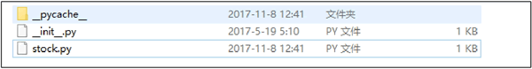
图 5
代码详情如图 6 所示：
图 6
随后在 spiders/stock.py 文件下，定义爬虫逻辑，详细代码如下：
import scrapy
from items import StockstarItem, StockstarItemLoader\
class StockSpider(scrapy.Spider):
name = 'stock' #定义爬虫名称
allowed_domains = ['quote.stockstar.com'] #定义爬虫域
start_urls = ['http://quote.stockstar.com/stock/ranklist_a_3_1_1.html']
#定义开始爬虫链接
def parse (self, response) : #撰写爬虫逻辑
page = int (response.url.split("_")[-1].split(".")[0])#抓取页码
item_nodes = response.css('#datalist tr')
for item_node in item_nodes:
#根据item文件中所定义的字段内容，进行字段内容的抓取
item_loader = StockstarItemLoader(item=StockstarItem(), selector = item_node)
item_loader.add_css("code", "td:nth-child(1) a::text")
item_loader.add_css("abbr", "td:nth-child(2) a::text")
item_loader.add_css("last_trade", “td:nth-child(3) span::text")
item_loader.add_css("chg_ratio", "td:nth-child(4) span::text")
item_loader.add_css("chg_amt", "td:nth-child(5) span::text")
item_loader.add_css("chg_ratio_5min","td:nth-child(6) span::text")
item_loader.add_css("volumn", "td:nth-child(7)::text")
item_loader.add_css ("turn_over", "td:nth-child(8) :: text")
stock_item = item_loader.load_item()
yield stock_item
if item_nodes:
next_page = page + 1
next_url = response.url.replace ("{0}.html".format (page) , "{0}.html".format(next_page))
yield scrapy.Request(url=next_url, callback=self.parse)
代码调试
为了调试方便，在 E:\stockstar 下新建一个 main.py，调试代码如下：
from scrapy.cmdline import execute
execute(["scrapy","crawl","stock","-o","items.json"])
E:\stockstar>scrapy crawl stock -o items.json
在代码里可设置断点（如在 spiders/stock.py 内），然后单击“Run”选项按钮→在弹出的菜单中选择“Debug‘main’”命令，进行调试，如图 7 和图 8 所示。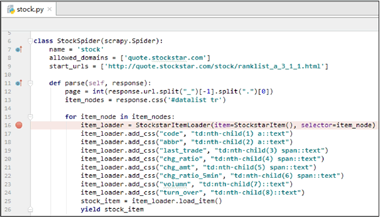
图 7
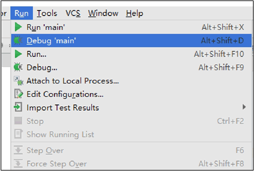
图 8
最后在 PyCharm 中运行 Run＇main＇，运行界面如图 9 所示：
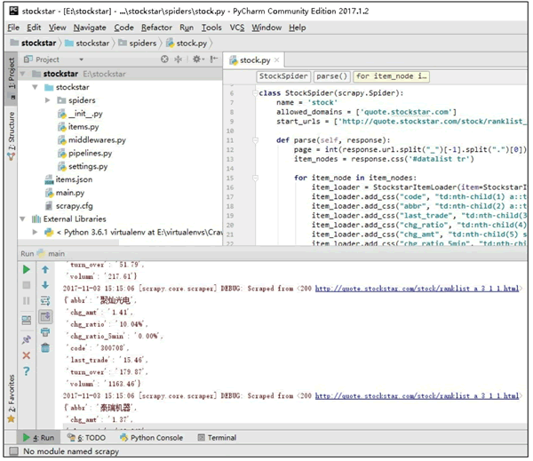
图 9
将所抓取的数据以 JSON 格式保存在 item 容器中。
知识扩展
本文从实战（抓取股票行情）出发讲解 Scrapy 框架，致力于让初学者快速了解 Python 爬虫 Scarpy 框架的使用。但本篇 Scarpy 实战毕竟篇幅有限，如果你想深入了解 Scrapy 框架，我推荐你阅读：
关注公众号「站长严长生」，在手机上阅读所有教程，随时随地都能学习。内含一款搜索神器，免费下载全网书籍和视频。

微信扫码关注公众号